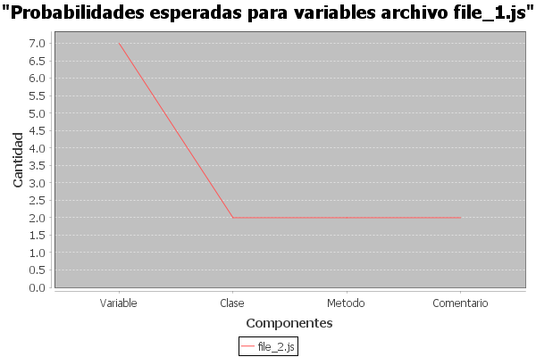

<br><!DOCTYPE html><html lang="en"><head> <meta charset="UTF-8"> <meta http-equiv="X-UA-Compatible" content="IE=edge"><meta name="viewport" content="width=device-width, initial-scale=1.0"><title>Estadistico</title><style type="text/css"> body{background-color: #DFDBE5;background-image: url("data:image/svg+xml,%3Csvg width='42' height='44' viewBox='0 0 42 44' xmlns='http://www.w3.org/2000/svg'%3E%3Cg id='Page-1' fill='none' fill-rule='evenodd'%3E%3Cg id='brick-wall' fill='%239C92AC' fill-opacity='0.4'%3E%3Cpath d='M0 0h42v44H0V0zm1 1h40v20H1V1zM0 23h20v20H0V23zm22 0h20v20H22V23z'/%3E%3C/g%3E%3C/g%3E%3C/svg%3E"); } #cuadro{ background-color: white; width: 80%; border: 4px solid black;  } #datosP{ background-color: grey; width: 300px;height: 170px; padding: 15px; border: 1px solid black; } table,th,td{ border: 1px solid black;border-collapse: collapse; } th, td{ text-align: center; padding: 10px; border-bottom: 1px solid black; } th{ text-align: center; } </style></head><body><br> <center> <div id="cuadro"><h1>REPORTE ESTADISTICO</h1>  <h2>Victor Alejandro Cuches de León  201807307</h2> <br><br> <br><br><table ><tr><th scope="row">Tipo</th><th>file_1.js</th><th>file_2.js</th></tr><tr><th>Total variables</th><td>12</td><td>7</td></tr><tr><th>Total clases</th><td>3</td><td>2</td></tr><tr><th>Total metodos</th><td>4</td><td>2</td></tr><tr><th>Total comentarios</th><td>2</td><td>2</td></tr><tr></table> <br><br><br><h1>GRAFICO No. 1</h1><h1>GRAFICO No. 2</h1><h1>GRAFICO No. 3</h1><h1>GRAFICO No. 4</h1><br><br> <div id="datosP"><h2>Datos Personales</h2><p>Victor Alejandro Cuches de León</p> <p>201807307</p><p>09/05/21 18:13:24</p></div> <br><br><br><br><br> </div></center> <br></body></html>